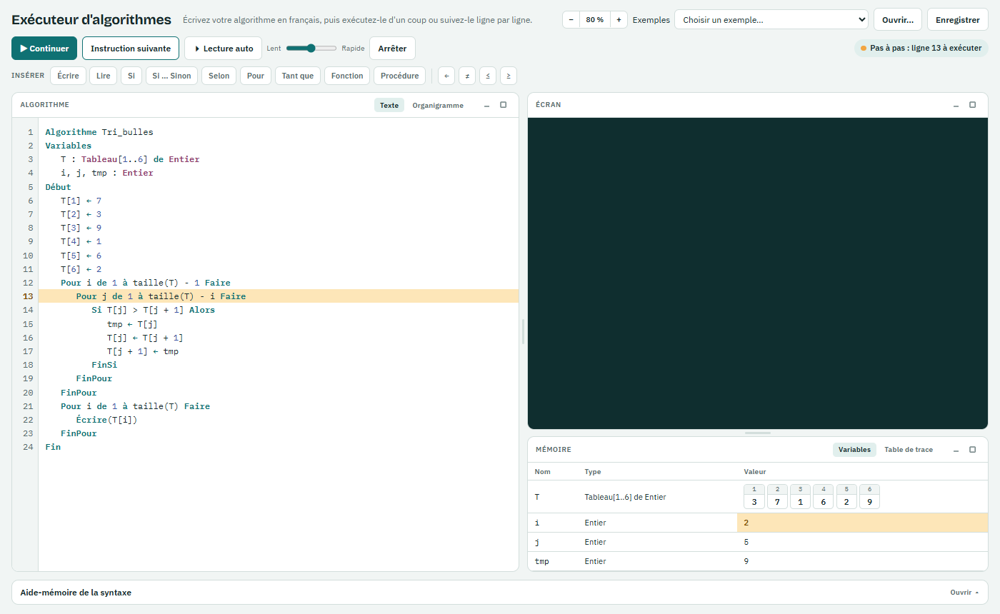
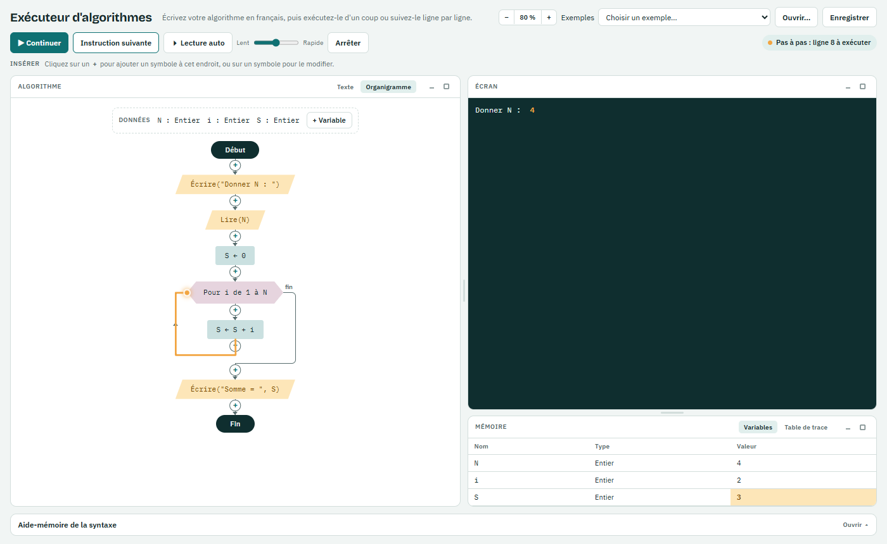
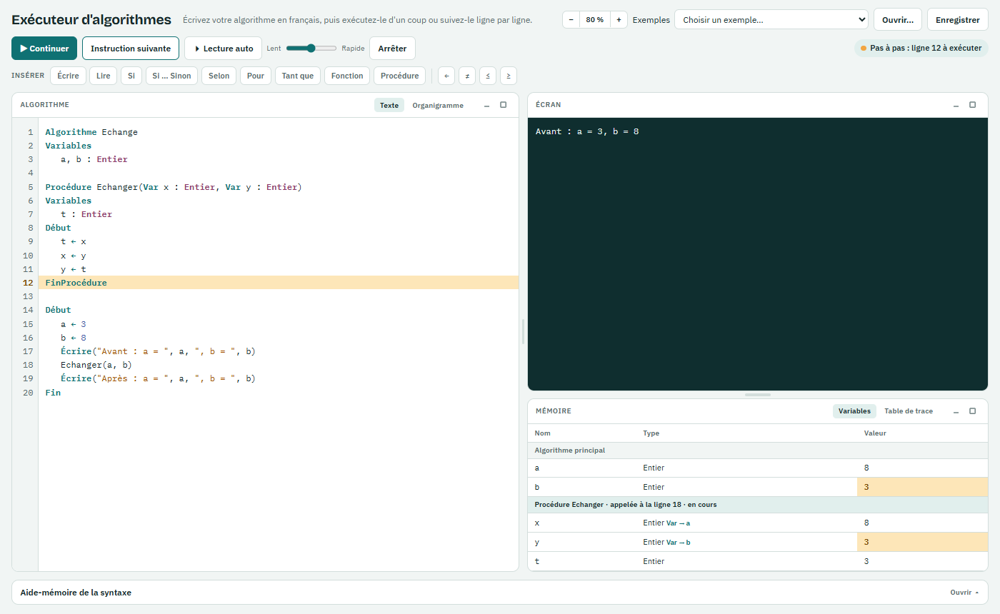

Écrivez vos algorithmes. Regardez-les s'exécuter.
Suivez chaque instruction pas à pas, voyez les variables changer et l'organigramme s'animer. Les erreurs sont expliquées simplement.

Tout ce qu'il faut pour apprendre l'algorithmique
La syntaxe des cours de lycée et d'université, sans rien installer d'autre. Majuscules et accents sont libres : Ecrire, écrire et ÉCRIRE fonctionnent.
Pas à pas et lecture auto
Avancez instruction par instruction, ou laissez l'algorithme défiler à la vitesse choisie.
Organigramme animé
L'organigramme est dessiné automatiquement. Un point lumineux suit le chemin réel des flèches.
Variables et table de trace
Chaque changement de valeur est surligné et ajouté à la table de trace, prête à recopier.
Tableaux et matrices
Les cases s'affichent une par une : idéal pour comprendre un tri ou une recherche.
Si, Selon, Pour, Tant que, Répéter
Toutes les structures de contrôle, avec des intervalles dans les cas du Selon.
Fonctions et procédures
Paramètres par valeur ou Var, variables locales, récursivité. On entre dans chaque appel.
Erreurs expliquées
« Il manque FinSi », « l'indice 11 sort du tableau »… avec un conseil pour corriger.
Fichiers .algo
Enregistrez votre travail, rouvrez-le d'un double-clic, rendez-le à votre professeur.
Un langage proche de celui du cours
Tapez <- pour obtenir ←, <= pour ≤. Les boutons « Insérer » ajoutent les structures pour vous.
- Types Entier, Réel, Caractère, Chaîne, Booléen et Tableau
- Constantes, fonctions prédéfinies : racine, abs, arrondi, taille…
- 16 exemples prêts à exécuter, de la somme au tri à bulles
Algorithme Factorielle Variables n : Entier Fonction Fact(k : Entier) : Entier Début Si k <= 1 Alors Retourner 1 FinSi Retourner k * Fact(k - 1) FinFonction Début Lire(n) Écrire(n, "! = ", Fact(n)) Fin
Voir le chemin de l'exécution
Passez en vue Organigramme : on voit quelle branche du Si est prise, combien de fois la boucle tourne et quand on en sort.
- Ajoutez ou modifiez un symbole directement dans l'organigramme
- Chaque fonction a son propre organigramme
- Agrandissez, réduisez ou ajustez chaque fenêtre

Comprendre les appels de fonctions
Pendant un appel, le panneau Mémoire montre les variables de l'algorithme principal et celles de la fonction. Un paramètre Var indique la variable qu'il modifie.

Télécharger
Choisissez la version de votre ordinateur. Celle qui convient est mise en avant automatiquement quand c'est possible.
Windows · 64 bits
Pour presque tous les PC récents (Windows 10 et 11).
Installateur .exe · 78 MoTéléchargerWindows · 32 bits
Pour les anciens PC dont Windows est en 32 bits.
Installateur .exe · 72 MoTéléchargerMac · Apple Silicon
Pour les Mac avec puce Apple M1, M2, M3, M4 (depuis fin 2020).
Image disque .dmg · 93 MoTéléchargerWindows 64 ou 32 bits ? Paramètres → Système → Informations système → « Type du système ». En cas de doute, prenez 64 bits.
Mac Apple Silicon ou Intel ? Menu Pomme (en haut à gauche) → À propos de ce Mac : « Puce Apple M… » = Apple Silicon, « Processeur Intel » = Intel.
Linux, Chromebook ou tablette ? Utilisez la version en ligne, qui fonctionne dans le navigateur.
Installation en une minute
Pas de compte et pas de connexion nécessaire une fois installée.
Windows
- Garder le fichierSi le navigateur dit « n'est pas fréquemment téléchargé » : Edge › ⋯ › Conserver › Conserver quand même ; Chrome › Conserver.
- Lancer l'installateurDouble-cliquez sur le fichier
.exetéléchargé, choisissez le dossier puis cliquez sur « Installer ». - C'est prêtOuvrez l'application depuis le Bureau ou le menu Démarrer. Les fichiers .algo s'ouvrent d'un double-clic.
« Windows a protégé votre ordinateur » ? C'est normal pour une nouvelle application qui n'est pas encore signée. Cliquez sur Informations complémentaires, puis sur Exécuter quand même.
Mac
- Ouvrir le .dmgDouble-cliquez sur le fichier téléchargé, puis glissez l'application dans le dossier Applications.
- Premier lancementOuvrez l'application une fois. Si macOS la bloque, allez dans Réglages Système → Confidentialité et sécurité et cliquez sur Ouvrir quand même.
Pourquoi ce blocage ? L'application n'est pas encore certifiée par Apple. Cette étape n'est nécessaire qu'au premier lancement.
Questions fréquentes
L'application est-elle gratuite ?
Oui, entièrement, sans publicité ni compte, et elle le restera. Si vous le souhaitez, vous pouvez offrir un café, mais ce n'est jamais obligatoire.
Faut-il Internet ?
Seulement pour le téléchargement. L'application installée fonctionne entièrement hors ligne.
Quels ordinateurs sont compatibles ?
Windows 10 et 11 en 64 ou 32 bits, et macOS 11 (Big Sur) ou plus récent, sur Mac Apple Silicon comme sur Mac Intel. Voir la section Télécharger.
Et sur Linux, tablette ou Chromebook ?
Utilisez la version en ligne : elle fonctionne dans n'importe quel navigateur récent. Votre algorithme est gardé dans le navigateur, et vous pouvez l'enregistrer en fichier .algo.
Comment désinstaller ?
Windows : Paramètres → Applications → « Exécuteur d'algorithmes » → Désinstaller. Mac : faites glisser l'application du dossier Applications vers la Corbeille.
Mes fichiers .algo sont-ils compatibles avec la version en ligne ?
Oui. Un fichier .algo est un simple texte : il s'ouvre dans les deux versions, et même dans le Bloc-notes.
Offrez-moi un café
L'application est 100 % gratuite : pas de publicité, pas de compte, et elle le restera.
Si elle vous aide à apprendre ou à enseigner, vous pouvez soutenir son développement avec un petit café, du montant de votre choix. C'est totalement facultatif.
Et sinon, le plus important : ادعيو معانا 🤲 (d3iw m3ana)
Prêt à exécuter votre premier algorithme ?
Installez l'application sur Windows ou sur Mac, ou commencez tout de suite dans le navigateur.